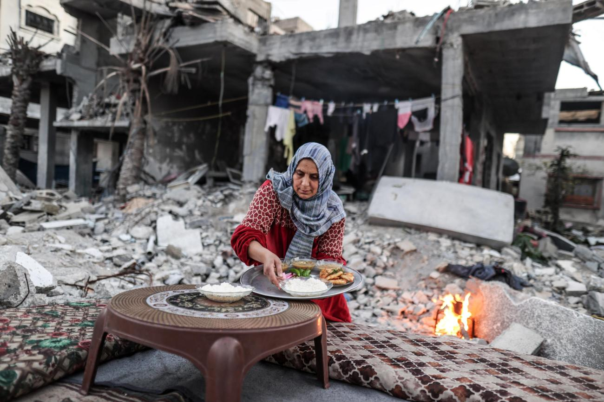
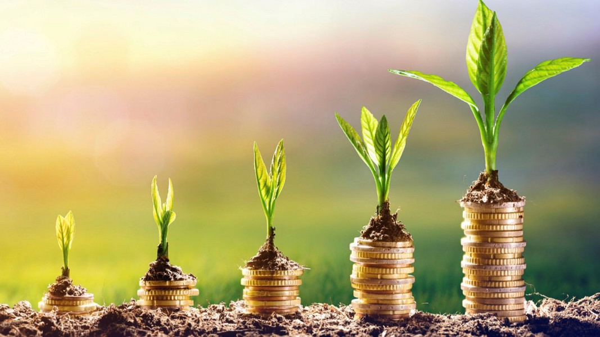
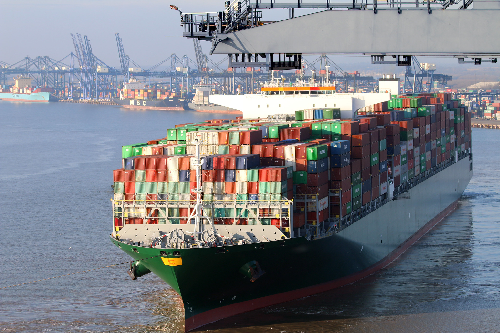
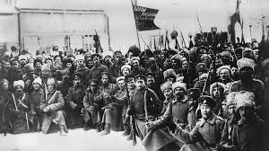

Negotiations to resolve the world’s most persistent conflicts will no doubt continue in 2025. The wars in Gaza, Sudan, and Ukraine as well as recent developments in Syria — each carrying grave geopolitical and humanitarian consequences — will remain central to global peace and security agendas. “These are not just terrible humanitarian tragedies, but they also fundamentally divide us,” says George Hampton, Executive Director for Global Policy and Multilateral Initiatives. “The hope is that in 2025, these conflicts may enter a new phase of resolution and rebuilding.” While the international community is currently focused on securing ceasefires, the end of these wars will be just the beginning of the path to shaping a peaceful future. Rebuilding after such protracted violence, destruction, and societal trauma demands a great deal of planning, collaboration, and resources. The UN will play a central role at each turn. Even as the world watched the stunning fall of the longtime Syrian regime in the final month of 2024, the immediate question was: What happens now? “We will need the support of the international community to ensure that any political transition is inclusive and comprehensive and that it meets the legitimate aspirations of the people of Syria, in all their diversity,” UN Secretary-General António Guterres said in a statement on the country’s new chapter. He expressed a commitment to helping Syrians build a country where “reconciliation, justice, freedom, and prosperity are shared realities for all” on the journey to sustainable peace. Meanwhile, long-simmering conflicts and instability in Haiti, Myanmar, and Yemen claimed tens of thousands of lives in 2024 with no end in sight and few real resources or international support to achieve peace. 
In 2024 the drumbeat for an overhaul of international financing grew louder and louder. 2025 will be the real test of political will, building on the adopted Pact for the Future and toward the 4th International Conference on Financing for Development (FfD4) in the summer. “Where are the opportunities to deliver on the Pact? For me, of course, it’s financing,” says Julie Kofoed, Senior Director for Sustainable Development Initiatives. “A lot of that hinges on the appetite to give up power and privilege, and that’s never an easy task. There is a lot at stake,” she says, referring to the widely recognized need to rebuild trust through meaningful reform of the international financial system, which could offer a transformative path forward for the world’s least developed countries. Julie says FfD4 could be a critical juncture for transforming global governance, particularly in terms of the extent to which wealthier UN Member States step up with development assistance. “This is a steep hill ahead,” she warned, acknowledging that significant reform is necessary to make current financial systems more inclusive, equitable, and effective. “But it’s also a massive opportunity to deliver on this central point around redistribution of wealth and power, and rectifying outdated systems,” she added. Ongoing discussions about reforming the World Bank, and International Monetary Fund, and other international financial institutions will need to focus on breaking down entrenched power structures. Further, global discussions in 2025 will also need to focus on how funding for development and disaster assistance must evolve, notes Julie. Lead Next Generation Fellow Inés Yábar also stressed the importance of financing, specifically for young people. “The way financing is set up is letting young people down,” she says. Even though nearly half the global population is under 30, just a fraction of development aid reaches young people and children.” Investing in us isn’t just about fairness,” says Inés. “It’s about unlocking the future’s full potential.” When it comes to investing in global health and well-being, Dr. Ahmed Ogwell, Vice President for Global Health Strategy, says finalizing the pandemic accord and funding overall are two goals for 2025. “How are key parts of global health going to be resourced?” he says, pointing out the many ways that health and the UN’s work intersect with other issues around the environment and rights. “We are talking about reproductive health. We are talking about climate and health. We’re talking about funding the work of agencies like UN Women and UNFPA [the United Nations Population Fund], not just WHO [the World Health Organization].”
All eyes will be on COP 30 in Belem, Brazil, next fall, by which time countries will have announced a new round of greenhouse gas emission reduction targets, known as nationally determined contributions (NDCs). “There’s already a lot of attention on making sure the next set of NDCs are sufficiently ambitious to move us substantially closer to the Paris Agreement’s 1.5°C target,” says Pete Ogden, Vice President for Climate and Environment, referring to the 2030 goal of limiting global warming to 1.5°C above preindustrial levels. “Leaders have a responsibility over the next year to shift the current trajectory and get us pointed in that direction.” In addition to the topline targets, Pete will be watching to see if the quality of the NDCs themselves will be improved. For instance, agricultural innovation and sustainable food systems need to be better reflected than they have in the past, given their enormous importance. “One of the things we want to focus on is countries really making headway into food and agricultural emissions,” he says. When counties gather in Belem, climate negotiators will also likely confront a new diplomatic dynamic, including potential withdrawals from the Paris climate agreement. “That’s the reality of 2025, so you have to look at other major economies, like China,” Pete says. “As the world’s largest emitter, they have the biggest ability to move us back toward the 1.5° objective.” “It’s pretty unappealing to walk out on these systems and give up your seat at the table,” Pete says. He is also quick to note that nations can outperform their own NDCs, continuing vital work at the sub-national level despite global headwinds. Another opportunity on the horizon for a climate win will come from negotiations at the International Maritime Organization around how to achieve the IMO’s ambitious new targets for reducing greenhouse gas emissions. This is a big deal, according to Pete, because if the shipping industry were a country, it would be the sixth largest emitter in the world — and its emissions are growing steadily. “This is a significant source of pollution that, traditionally, hasn’t gotten the same level of attention as other sectors,” Pete says, emphasizing the potential for a “breakthrough climate victory” at the IMO in 2025. 
As 2025 begins, the outlook for gender equality remains bleak. Hard-won gains, including the right to education, health care, and freedom of movement, are being challenged across the globe. The Taliban’s 2024 ban on girls and women from speaking in public in Afghanistan is among the most egregious.
At the same time, 2025 is a commemorative year for the global gender equality movement, marking the 30th anniversary of the Fourth World Conference on Women and the 1995 adoption of the Beijing Declaration and Platform for Action (Beijing+30).
Acknowledging the duality of this moment, Michelle Milford Morse, Vice President for Girls and Women Strategy, says: “The girls and women of the world have a right to be really impatient. But they are also allowed to celebrate the sweat, the solidarity, the strategies that got us here, and show us the way ahead.”
As she points out, the 1995 conference was much more than a single point in time. It was the culmination of years of advocacy and a launching point for action that continues to this day, Michelle says.
“Thanks to the generations of activists who showed up at the conferences that preceded Beijing — from Mexico to Copenhagen, and Nairobi — and their steadfast hope and hard work, transformational change followed within just a decade,” Michelle says. “There was massive progress between Nairobi in 1985 and Beijing in 1995: in laws, in social norms, in reproductive rights, and economic power.”
As the global gender equality movement has demonstrated, the journey toward progress can be slow, halting, and non-linear. But with the persistence of many people over many years — and sometimes decades, it is possible to fix systemic misogyny and outdated institutions, and to make 2025 an inflection point.
This year the UN will mark its 80th year, and enacting urgent reforms to upgrade some of its World War II era bodies and processes will continue to be a major priority. “The world has changed drastically since 1945, and the UN must adapt to remain fit for purpose,” George says. Elaborating on the need to help the UN evolve, George likened criticism of multilateralism to blaming the stadium when your team loses. Echoing the words of the renowned late U.S. diplomat Richard Holbrooke, and citing another iconic New York institution as an example, he says, “We wouldn’t be able to play at Madison Square Garden today if they hadn’t upgraded the floors since it was first built in the 1960s.” And that’s exactly what the Pact for the Future aims to do. The first-of-its-kind international agreement, ratified at the UN General Assembly in 2024, outlines concrete steps to upgrade multilateralism that can be taken across borders and industries — and yield global wins. After its historic adoption in September, the focus now turns to implementing the Pact in full. The 56 steps outlined in the Pact for the Future cover the agreement’s five key areas: 1) sustainable development and financing for development; 2) international peace and security; 3) science, technology, innovation, and digital cooperation; 4) youth and future generations, and 5) transforming global governance. Given its extensive scope, implementing the Pact will require cross-cutting action — but not by any one nation, sector, or institution. “Person after person, institution after institution, each UN Member State has something to grab onto in the Pact and something to move forward. It’s not a one-size-fits-all proposal. There’s no single owner to the actions that have been agreed to in the Summit’s outcomes,” George says. “That’s what the Pact proposes and shows the opportunity for: that we can still get more done together than we can alone. There’s power in that sentiment.” Finally, the campaign for the election of the next UN Secretary-General will gain momentum in 2025, with the General Assembly already taking steps, potentially bringing fresh perspectives and plans to the organization as a whole. And perhaps, the first woman to lead the global organization will emerge as discussions advance. 